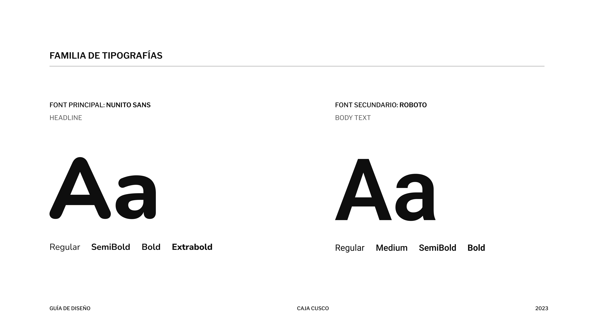

El Problema
Actualmente se tiene una plataforma web la cual es de uso de los clientes caja cusco para las operaciones de consultas. Para agilizar los procesos se debe tener una operación sin flujos cortantes ya que la pagina no es tan amigable el usuario muchas veces desiste de la operación que desea hacer en la página.
Objetivo
El siguiente documento incluye la especificación funcional para el desarrollo de una web responsive para la caja municipal de cusco, en la cual especifica las operaciones que se desea realizar. Se está mejorando a manera visual y funcional las acciones que tiene la página actual.
Solución
- ☛ Mejorar los procesos de navegabilidad por el aplicativo web
- ☛ Tener experiencia de usuario a nivel Web responsive para operaciones.
- ☛ Que la plataforma se pueda adaptar a cualquier entorno Web, Web responsive sin perder la forma.
- ☛ La escalabilidad del proyecto para futuros cambios.
Road Map
La estrategia es basado en la descripción general del objetivo principal del proyecto para crear un sitio web orientado a los negocios.
Resumen ejecutivo del producto y Objetivos
El producto es la plataforma web de consultas, la cual actualmente presenta problemas de usabilidad y flujos cortantes que han generado una experiencia negativa para los usuarios. Con el fin de abordar estas deficiencias, nos hemos propuesto una serie de objetivos clave es: Mejorar la usabilidad, Agilizar los procesos e Incrementar la satisfacción para el usuario.
Wireframe
Diseño de Interfaz de Usuario
Tipografía
Para el rediseño del sitio web se utiliza una tipografía Sans Serif Nunito Sans y Roboto, son agradables a la vista y permiten que el usuario lea de una manera fácil

Grid
DESKTOP 1440PX
12 Columnas Grid
TABLET 720PX
8 Columnas Grid
MOBILE 375PX
4 Columnas Grid
Color
Plataforma web Caja Cusco
El propósito principal de Caja Cusco es apoyar a segmentos socioeconómicos que tienen acceso limitado a la banca tradicional, impulsando el desarrollo de la pequeña y microempresa, fomentando el ahorro en la población y otorgando créditos a las PYME.
Este flujo describe como el usuario puede realizar una Simulación de Crédito.
Este flujo permite visualizar todos los productos de forma ordenada para el usuario y buscar la de su interés.
El usuario puede realizar su denuncia y que será gestionada a nivel BO, es importante tener un canal de denuncias para ir mejorando.
Se muestra un rediseño con equilibrio, constraste y un flujo de forma amigable y adaptable.

Adaptable en cualquier dispositivo: Diseño Responsive
Con nuestro rediseño adaptado y accesible en el diseño responsive de la Plataforma, podrás disfrutar de una experiencia óptima y sin complicaciones en cualquier dispositivo. Navega y realiza tus operaciones de forma fluida, sin la necesidad de redimensionar o hacer scroll. Simplifica tu experiencia al acceder a nuestros servicios, sin importar el dispositivo que utilices.
Este flujo describe como el usuario puede realizar una Simulación de Crédito
Validaciones de formularios sin integración de servicios.
Análisis y Resultado
Durante el análisis exhaustivo llevado a cabo por nuestro equipo, se identificaron diversos aspectos clave para mejorar la Plataforma Caja Cusco. Evaluamos la usabilidad, la eficiencia en el proceso de consultas, las adaptaciones responsivas del navegador, el redireccionamiento, las validaciones de formularios y el redireccionamiento web. Para obtener información precisa, utilizamos prototipos y realizamos pruebas con usuarios, recopilando valiosas retroalimentaciones. Con base en estos hallazgos, nos enfocamos en optimizar la plataforma en diferentes secciones, desde el Menú Principal hasta el Pie de Página, estructurándolas de manera más eficiente. Hemos logrado una navegación más fluida lo que ha contribuido a una experiencia de usuario más satisfactoria, además se implementó formularios sin integración de servicios, lo cual nos ha permitido identificar áreas de mejora y realizar cambios significativos para brindar una experiencia mejorada.